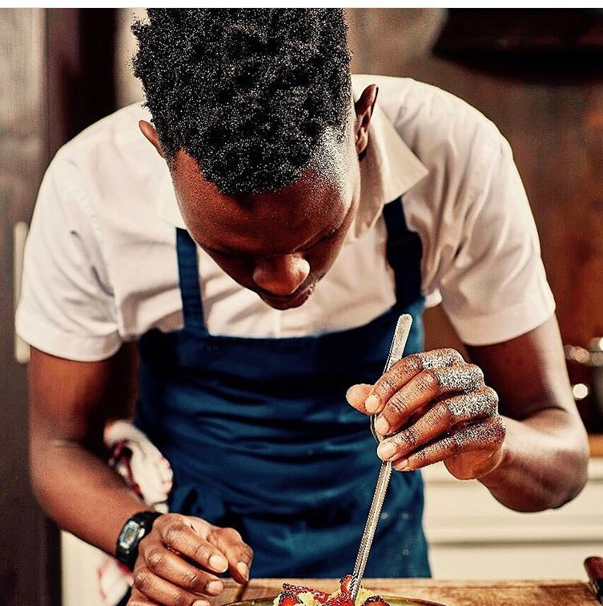
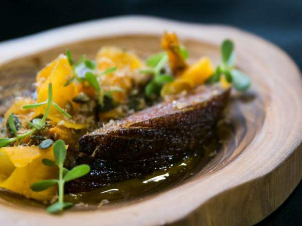
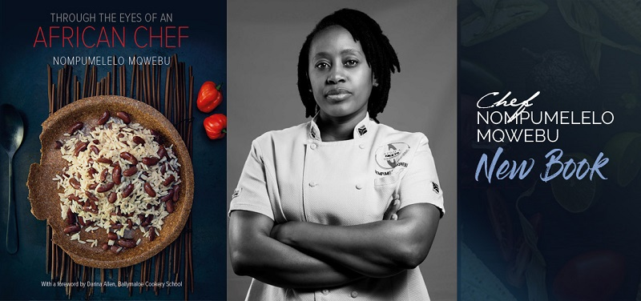
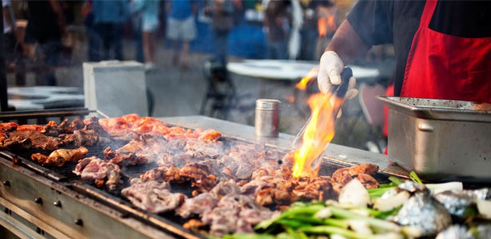
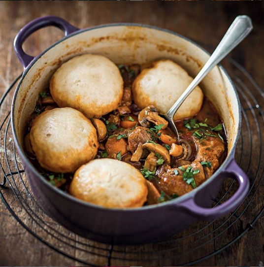
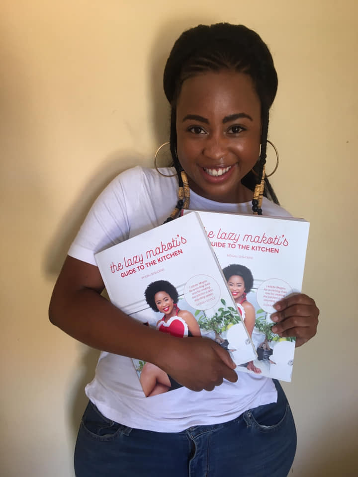

Honouring Heritage with Creativity and Ingenuity: Young Chefs Disrupt ‘Old Food Culture’ in South Africa
The food we grow up eating forms an integral part of our identity, inextricably linked with our senses. A whiff, a bite, a sip – all have the ability to evoke treasured memories which can instantaneously transport us to a different time and place. But what happens when the cuisine you know and love is not celebrated in the food culture of your own country? South Africa is one such country where local cuisine is not represented in fine dining, but a group of young talented chefs are changing that by disrupting the ‘old food culture’, bringing forth a new era that proudly honours their indigenous heritage, while also showcasing creativity and ingenuity.
By Shazia Usman
Even though the legacy of apartheid continues to contribute to the lack of promotion of traditional and indigenous cuisine in South Africa, when 26-year-old Chef Vusumuzi Ndlovu was named the 7th best young chef in a global competition, his winning dish was the talk of the town.

Chef Vusumuzi Ndlovu. CREDIT: The Marabi Club
“It was a duck which I aged for five weeks. It had grain porridge. It had heavily smoked duck leg biltong and pumpkin fermented in umqombothi.”
Titled Isicupho, this signature dish was inspired by a childhood spent on his grandmother’s farm in South Africa.
“Growing up on my grandmother’s farm, we used to catch birds, cook and eat them together. Every morning before we left to go play, we’d eat porridge. So I incorporated grain porridge into the dish. If I had to cook a dish for my grandmother and cousins, this is the dish I would cook for them,” said the head chef of The Marabi Club in Johannesburg.

Isicupho, the winning dish. CREDIT: Eat Out
Choosing to honour his memories with flavours unique to South Africa, at a global stage such as the S. Pellegrino Young Chef 2018 in Milan, Italy, speaks to the depths of the pride shared by the young chef, of indigenous cuisine from his country.
And if the lack of emphasis on local cuisine at South African culinary schools is anything to go by, it is pride that is not shared by everyone.
“At chef school you’re made to feel that French cuisine is superior or you hear that the best restaurant in the world for five years running is in Denmark.”
In an ideal world, South Africa’s Black chefs should feel “safe to do the same and display who we are,” he says. “Those guys are great because they are honouring their heritage.”
Chef Ndlovu is not alone in his thinking.
Take Chef Nompumelelo Mqwebu, for example. Despite having been taught the classic international techniques for cooking food, this award winning chef and author, always feels the urge to recall her grandmother’s style of cooking.
She says, “whatever I’m making…I’ve gone back to, ‘what did my grandmother teach me? What vegetables do I remember?’ My grandmother owned a diner type restaurant and everyone cooked well at home – so I was surrounded by many who inspired me to start cooking. I started cooking at an early age and I loved entertaining at home”.
“We need to take pride in our own food, develop it, document and proudly share our food history with its rich heritage. It just does not make sense to say you are showcasing your country, your people and your culture, yet you lack your food identity at the heart.”

Chef Nompumelelo Mqwebu with her awarding winning book, Through the Eyes of an African Chef. CREDIT: Africa Meets Europe
“I’m passionate about showing the world what fantastic talent we have in South Africa and in order to achieve the level of excellence we are capable of – funding and programmes dedicated to mentoring and up-skilling local talent is what is required,” says the author of Through the Eyes of an African Chef, which won the Best in the World First Book category at the renowned Gourmand World Cookbook Awards in Yantai, China last year.
Aside from limited focus in culinary school curriculum, there is also a lack of Black chefs owning and running top restaurants in South Africa. This means traditional and indigenous food does not make it into the South African fine-dining menus unless “appearing as a whimsical homage to a sauce, flavour or single ingredient”[1].
The only exception is a small number of traditional restaurants in touristy Soweto in Johannesburg, casual shisa nyama or braai (barbecue) restaurants in some provinces, and shebeens (casual, traditionally unlicensed bars). Beloved dishes like pap (similar to ugali, or stiff maize meal), morogo (wild spinach), tripe, samp (hominy) and beans or “running chicken” (a free-range mature bird) stew are hard to find anywhere outside someone’s home.

Shisa nyama or braai (barbecue). CREDIT: Food24
When concerns of representation are highlighted, Black South African chefs are accused of playing the ‘race card’. This is something both Chef Loyiso Mtoba and Chef Zola Nene can attest to.
“Cape Town is probably the most divisive foodie city we have. Yet it’s more difficult for a Black chef to make it there than anywhere else in the country, as the culinary industry is still very much white-dominated. I lived and worked there for a time and although I was more qualified and experienced than my white colleagues, I was overlooked for a promotion,” says Chef Mtoba, who is a chef at Gemelli Cucina Bar, as well as a blogger.
For celebrated television chef, author and co-host of The Great South African Bake Off, Chef Nene, the discrimination lies at the intersection of race and gender.
“I’ve been told many times during my career that I only got to where I am because I am a Black woman,” she says. “What those people don’t understand is that I have to work twice as hard to earn any recognition because of these very stereotypes. I’m a good chef and stylist and food writer – I hate it when people undermine that.”
For Chef Nene, this started when she was the only Black student at her cooking school back in 2010.
Chef Zola Nene in her element. CREDIT: Zola Nene
“I remember being singled out a lot to do certain appearances because I was the only ‘token Black,’” she says. “They never used those words, but it was obvious.”
“Black chefs in high positions in top kitchens are like hen’s teeth,” Nene says, adding that she’s inundated with messages from Black youth who want to study but can’t afford the fees.
“I just wish the courses were a little more affordable. I think what we need is more funds for underprivileged youth to study at these prestigious cooking schools.”
Chef Nene uses her television show and Facebook to promote South African cuisine and cooking by introducing traditional meals during the show.

Chef Nene’s delicious beef stew with dombolo (steamed bread). CREDIT: Zola Nene
While chefs like Ndlovu, Mqwebu, Mtoba and Nene are part of a growing number of Black South African chefs coming out of national and international culinary schools and using their established platform to highlight lack of representation, there are home-trained chefs like young Mogau Seshoene, a Polokwane native from Limpopo Province, who have taken a slightly different route to promote South African cuisine.
What started out as a simple cooking lesson to teach her soon-to-married friend a few traditional dishes has today grown into something bigger than what Mogau, a former finance professional, ever expected.
Her start-up company, The Lazy Makoti, meaning the lazy daughter-in-law, a phrase paying a somewhat cheeky homage to its beginnings, offers cooking lessons in traditional South African cuisine to large groups of people. With the expansion of her team to four, she now also has a range of locally produced kitchen accessories; a cookbook; and dreams to eventually open a restaurant and expand across the continent.
“The inspiration for the company came when a friend of mine needed cooking lessons on South African cuisine, and shockingly in South Africa, she couldn’t find anywhere that offered lessons on local cuisine – only French, Italian, etc. After doing a few lessons with her I realised there was a gap in the market when word was spreading and more people were requesting lessons. I then left the corporate world where I was unhappy in order to pursue the business.”
The young chef, who developed her love for food while cooking with her mother, wants to preserve her heritage and culture.
“I enjoy teaching and sharing my knowledge of South African food because it’s a dying art. As more and more young people become global citizens, there’s a big part of their heritage and culture they are losing out on. [Through my work] I would like to preserve it and continue to celebrate it,” she says.
As she cooks chakalaka, a traditional and popular South African vegetable relish served with bread, stews, and meat, Mogau shares her elation about her cookbook, which is in its fourth reprint.
“It’s a collection of great South African recipes, with both modern and traditional recipes that South Africans enjoy. I am so happy that everyone will get to experience it. It’s been a long time coming.” The young entrepreneur also uses social media to engage with followers, frequently answering questions about the recipes she shares.

Chef Mogau Seshoene with her The Lazy Makoti’s Guide to the Kitchen, already in its fourth reprint since being published late last year. CREDIT: Mogau Seshoene
But perhaps it is Chef Mqwebu who said it best when asked to share what we can expect next from her and other Black South African chefs.
“I want to influence young chefs to venture into various aspects of gastronomy and hopefully, one day soon South Africa will develop a School of Gastronomy based on indigenous cuisine.”
These young and talented Black South African chefs are determined to popularise traditional and indigenous South African cuisine, giving it the respect it deserves, and why not? Because for many of them, this is where it all began.
[1] Food and Wine: https://www.foodandwine.com/news/south-african-chefs-speak-out-about-representation
The following sources were used to write this story:
Vusumuzi Ndlovu
- http://www.capetalk.co.za/articles/304965/meet-vusumuzi-ndlovu-the-sa-chef-named-among-the-best-in-the-world
- https://www.foodandwine.com/news/south-african-chefs-speak-out-about-representation
Nompumelelo Mqwebu
Loyiso Mtoba
Mogau Seshoene
http://www.lionessesofafrica.com/blog/2016/2/7/the-startup-story-of-mogau-seshoene